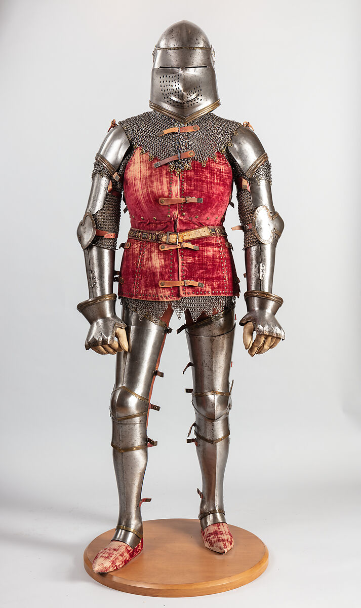

Medieval Weapons & Armour Comparison
| Category | European | Japanese |
|---|---|---|
| Swords |
LongswordBecame longer, lighter, and stronger over time. .jpg)
|
KatanaA curved, high-carbon steel blade, the signature weapon of the samurai. |
| Spears |
SpearsVersatile weapons used for both thrusting and throwing. .jpg)
|
YariA long spear, became the primary weapon for samurai infantry. .jpg)
|
| Bows |
LongbowRange of 275-400m, used by archers for quick reloads and massive draw-strength. .jpg)
|
YumiAn asymmetrical longbow (6 feet), primarily used on horseback. .jpg)
|
| Armour |
Plate ArmourEvolved from chainmail, providing superior protection.

|
Dō-maruLightweight and flexible for foot soldiers. |